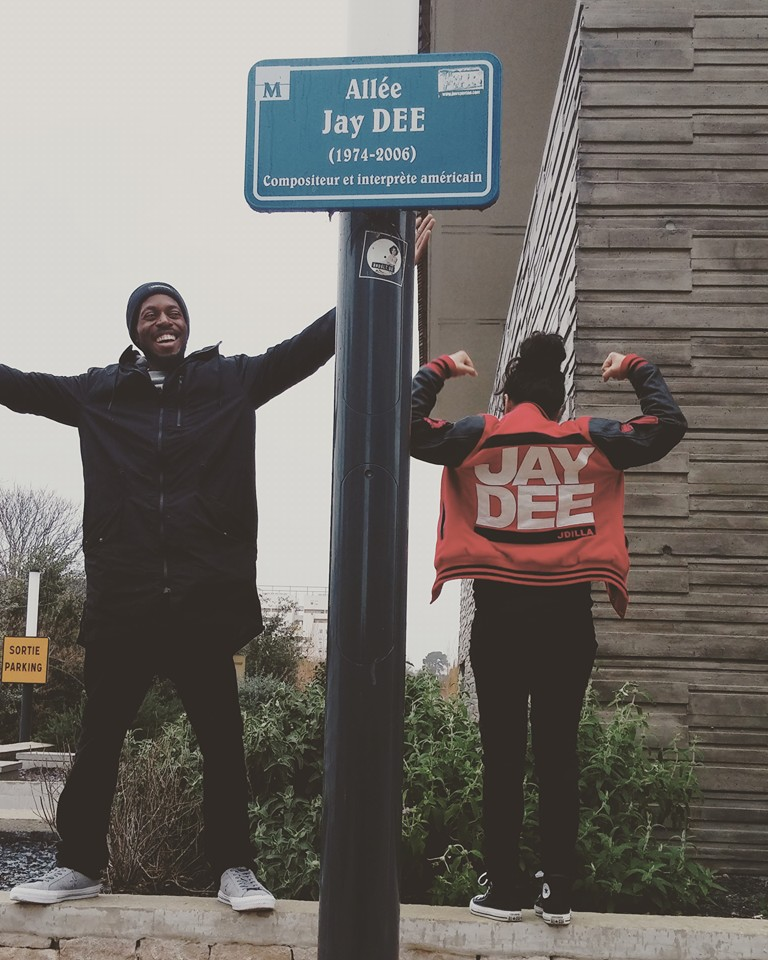
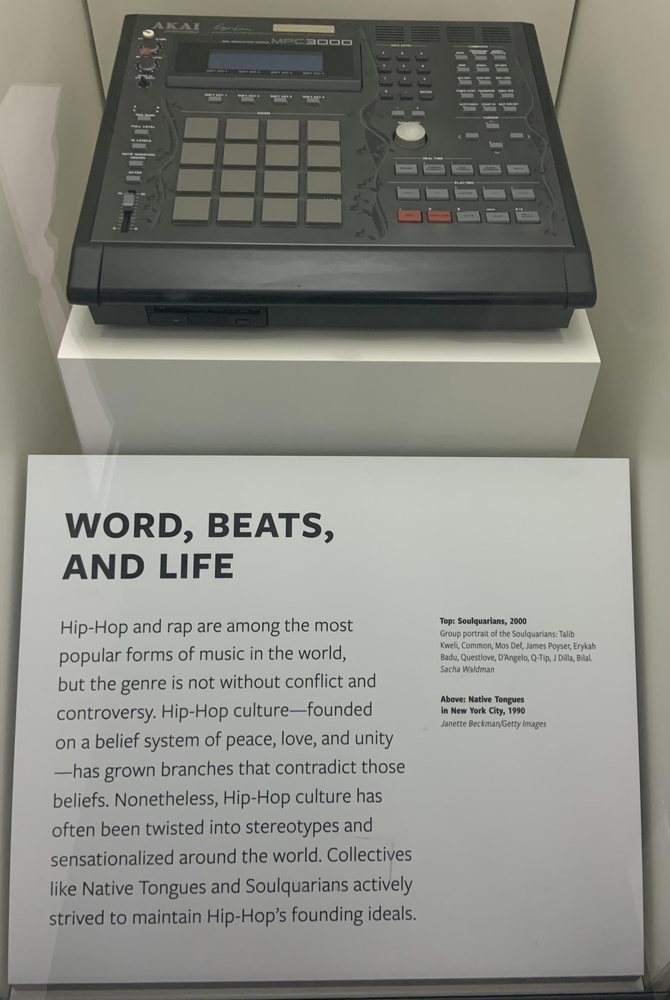
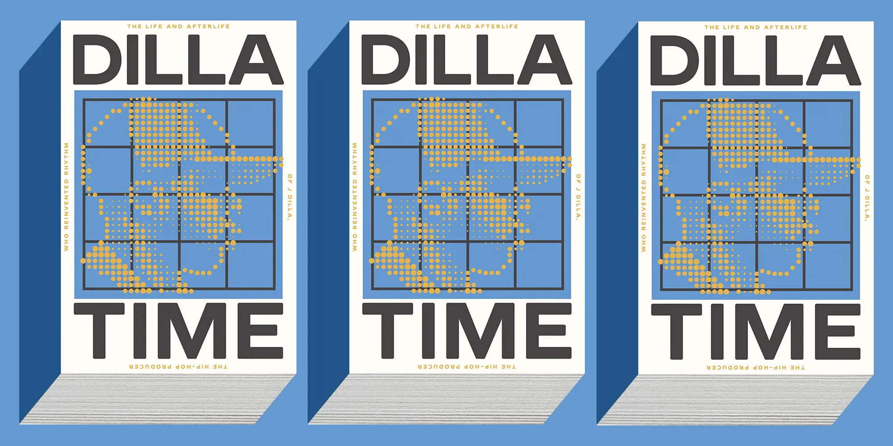

Memorial items
In mid-2012, Montpellier, France, dedicated a small street "Allée Jay Dee".

In 2014, Maureen Yancey donated Yancey's custom-made Minimoog Voyager synthesizer and Akai MPC3000 to the Smithsonian's National Museum of African American History and Culture. They are part of the "Musical Crossroads" exhibit.

A Yancey-inspired donut shop opened in Detroit on May 3, 2016, to a great reception. Created by Yancey's uncle Herman Hayes to honor his nephew's legacy, it sold out of donuts three times on its first day.

Book
The book, Dilla Time, by Dan Charnas, about Yancey's life, work, and influence premiered at #4 on the New York Times bestseller list in February 2022.
